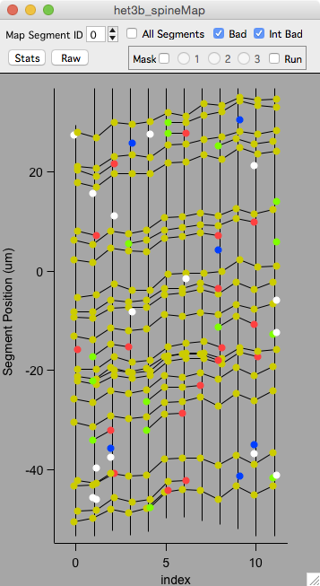
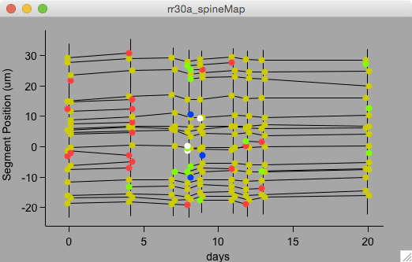
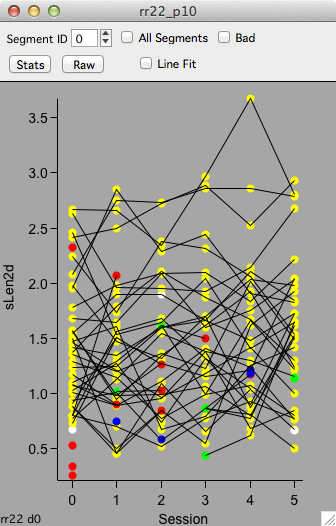
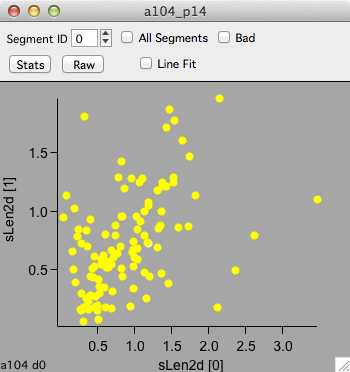
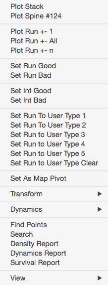

Map plot

A map plot shows annotations versus time-points. Objects persisting from one session to the next are connected with a line.
All map plots are highly interactive. Selecting an object will propagate this selection to other map and stack plots. Right-click an object to plot a run.
There are two special plots provided in the time-series panel: Object Map and Segment Map.
Colors
The colors of objects in a map denote their dynamics.
- Green : Added
- Red : Subtracted
- Blue : Transient (1 session)
- Yellow : Persistent
- White : Bad
Top control bar
Toggle the top control bar on and off with keyboard ‘c’.
- Segment ID. Plot individual segments. Use ‘All Segments’ to plot all segment. This is only used for spine annotations.
- Bad. Toggle display of annotations tagged as bad.
- Int Bad. Toggle display of annotations tagged as intensity bad.
- Stats. Display a table of statistics (mean/sd/se/n) for plotted data.
- Raw. Display a table of raw data.
Examples
There are two special plots provided in the time-series panel: Object Map and Segment Map. A large number of plots can be generated using the plot panel.

This is an example of a ‘Spine Map’ showing the position of each spine on its dendritic segment. The lines connect persistent spines across time-points. Added spines are green, subtracted are red, and transient are blue. Spines tagged bad are in white. This plot is showing each time-point as a function of the day it was acquired with the first time-point being the zero day.

A map plot of spine length in μm (sLen2d) versus map session.

A map plot of spine length in μm (sLen2d) for time-point 1 versus time-point 0. Each point is the length of a single spine measured in session 0 (bottom axis) and again in session 1 (left axis).
Right-click menu

Keyboard
| Key | Result | |
|---|---|---|
| Navigation | ||
| Arrow-keys | Pan | |
| +/- | Zoom in/out | |
| mouse-wheel | Zoom in/out | |
| enter | Full Zoom (reset zoom) | |
| Data | ||
| esc | Cancel selection (including masks) | |
| b | Mark selected object as bad (press ‘b’ again to mark it good | |
| e | Edit plotted data in table | |
| General | ||
| r | refresh plot | |
| d | toggle dynamics coloring | |
| f | toggle forced coloring | |
| c | toggle top control bar | |
| i | open/close object info panel | |
| h | display help |